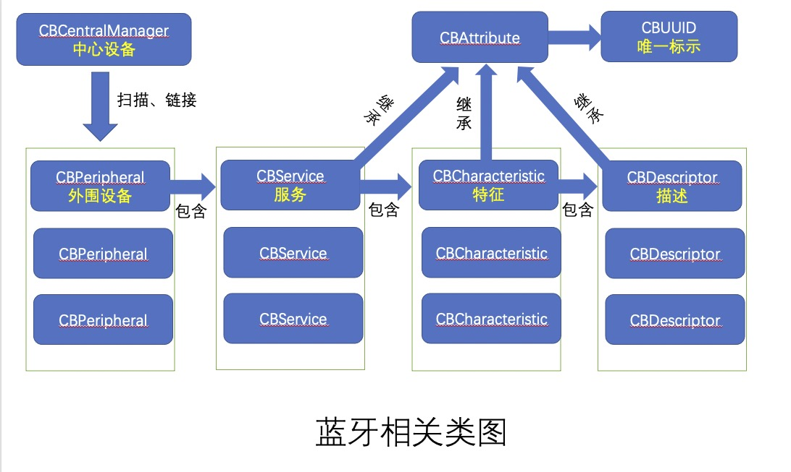
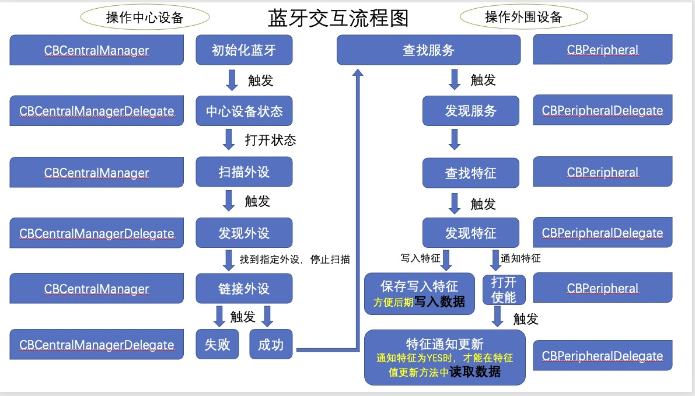

蓝牙相关基本知识
涉及到蓝牙开发，首先有几个问题是需要我们理解的
- 任何设备既可以是中心设备、也可以是外围设备
- 外设 和 中心设备 之间通过特征建立一个双向的数据通道
- CBCentralManager主要操作中心设备，处理链接上外设之前的操作，链接上外设后，主要靠CBPeripheral（主要操作外设）处理外设相关操作（服务、特征、数据读写）
- 中心设备管理 CBCentralManager 中心控制类，主要管理中心设备，以及处理跟外设（外围设备）相关操作，主要是扫描、链接、断开外设。操作中心设备的核心类。很重要的协议CBCentralManagerDelegate，包含中心设备状态（是否打开蓝牙）回调、发现外设回调、链接外设成功回调、链接外设失败回调、外设链接断开回调等方法。一个中心设备可以链接多个外围设备。
外围设备 CBPeripheral 外设类，包含设备的基础属性，名字，uuid等信息。向外设写入数据。 当中心设备连接到外设后，需要通过外设对象的代理方法进行数据交互。操作外围设备的核心类。很重要的协议CBPeripheralDelegate，包含发现服务回调、发现特征回调、特征的通知设置改变回调、特征更新回调、特征已写入数据回调等方法。一个设备包含多个服务、一个服务包含多个特征、一个特征又包含多个描述。
外围设备管理 CBPeripheralManager 。用的较少 设备的控制，主要可以为设备设置Service以及Characteristic，可以手动配置特定的服务和特征值，也可看作可以自定义蓝牙协议，例如将手机作为外设时可以为自己的手机蓝牙设置服务和特征值。CBCentralManager更适合将自己的软件作为中心。
- 服务 CBService 服务对象是用来管理外设提供的一些数据服务的。一个服务可以包含多个特征
8、特征 CBCharacteristic 通过绑定服务中的特征值来进行数据的读写操作。
- 特征就是具体键值对，提供数据的地方。
- 每个特征属性分为这么几种：读，写，通知等几种方式。
- 有时读、写、通知可以是同一个特征，也可以读、写、通知各用一个特征表示。
- 一个特征可以包含多个描述。
- 一般我们操作到特征这一层
- 描述 CBDescriptor 每个characteristic可以对应一个或多个Description 供用户描述characteristic的信息或属性。
- CBAttribute CBService，CBCharacteristic，CBDescriptor 类都继承自 CBAttribute，它们有一个共同的属性 CBUUID，用来作为唯一的标识。
蓝牙相关类图
一个中心设备可以连接多个外设，一个外设包含多个服务，一个服务包含多个特征，一个特征包含多个描述
服务、特征、描述都用CBUUID唯一标识 
蓝牙交互流程
下面简述下以手机作为中心设备、其它作为外围设备的交互流程，大致流程如图所示 
BabyBluetooth蓝牙库介绍
特色：
- 基于原生CoreBluetooth框架封装的轻量级的开源库，可以帮你更简单地使用CoreBluetooth API。
- CoreBluetooth所有方法都是通过委托完成，代码冗余且顺序凌乱。BabyBluetooth使用block方法，可以重新按照功能和顺序组织代码，并提供许多方法减少蓝牙开发过程中的代码量。
- 链式方法体，代码更简洁、优雅。
- 通过channel切换区分委托调用，并方便切换
为什么使用它？
- 基于原生CoreBluetooth框架封装的轻量级的开源库，可以帮你更简单地使用CoreBluetooth API。
- CoreBluetooth所有方法都是通过委托完成，代码冗余且顺序凌乱。BabyBluetooth使用block方法，可以重新按照功能和顺序组织代码，并提供许多方法减少蓝牙开发过程中的代码量。
- 链式方法体，代码更简洁、优雅。
- 通过channel切换区分委托调用，并方便切换
- 便利的工具方法
- 完善的文档，且项目处于活跃状态，不断的更新中
- github上star最多的纯Bluetooth类库
- 包含多种类型的demo和ios蓝牙开发教程
- 同时支持蓝牙设备中心模式和外设模式（central model and peripheral model）